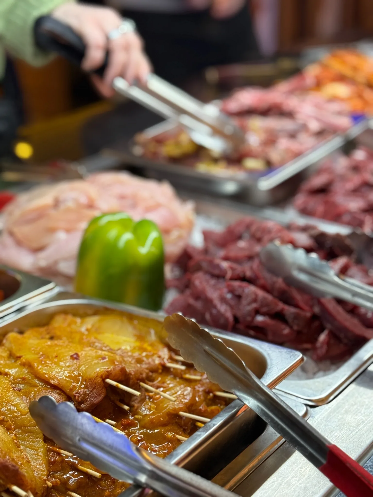

Live Grill.
Sie wählen die Zutaten. Unsere Köche machen daraus in wenigen Minuten Ihr persönliches Gericht – heiß, frisch und direkt von der Teppanyaki-Platte.
Auswählen. Grillen. Genießen.
Ob Fleischliebhaber, Fischfan oder vegetarisch: Der Live Grill gibt Ihnen die Freiheit, jedes Gericht genau so zusammenzustellen, wie Sie es möchten.
Tischnummer
Nehmen Sie die Klammer mit Ihrer Tischnummer vom Tisch mit zum Buffet.
Zutaten
Wählen Sie Fisch, Fleisch, Meeresfrüchte oder Gemüse nach Ihrem Geschmack.
Sauce
Ergänzen Sie Ihre Lieblingssauce und markieren Sie den Teller mit Ihrer Nummer.
Teppanyaki
Unsere Köche grillen Ihr Gericht frisch und bringen es anschließend heiß an Ihren Tisch.
Symbolbild · KI-generiert

Das komplette Buffet bleibt dabei.
Zusätzlich zur individuellen Live-Grill-Auswahl steht Ihnen die große Auswahl an frisch zubereiteten warmen Speisen, Sushi, Salaten, Suppen und Desserts zur Verfügung.
Der Live Grill ist damit ideal für Gruppen: Jeder kann sich genau das zusammenstellen, worauf er gerade Lust hat.
Preise & Zeiten ansehenLive Grill reservieren.
Besonders am Wochenende empfiehlt sich eine telefonische Reservierung.